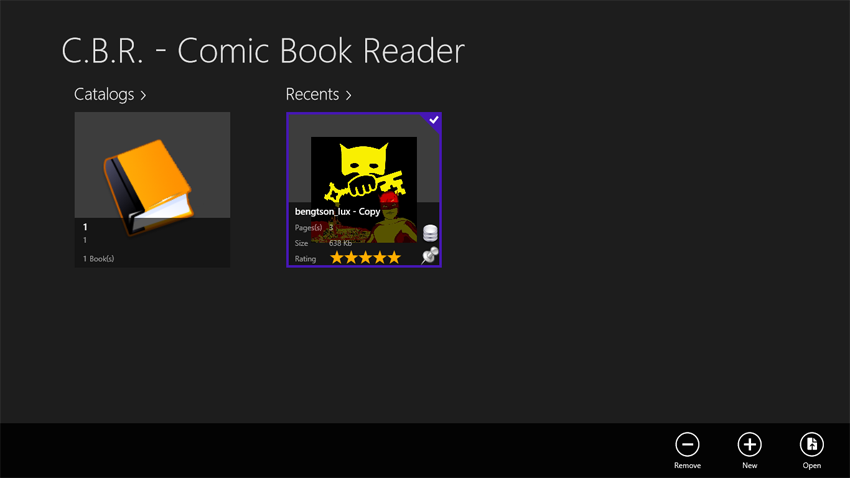
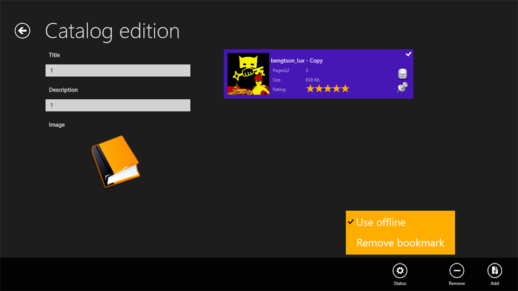
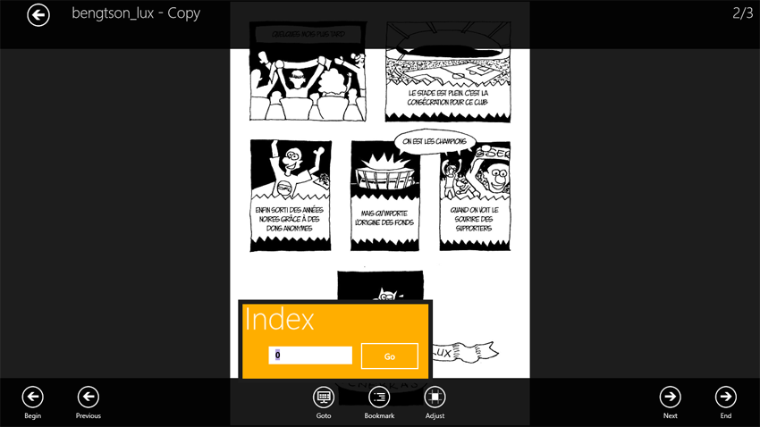
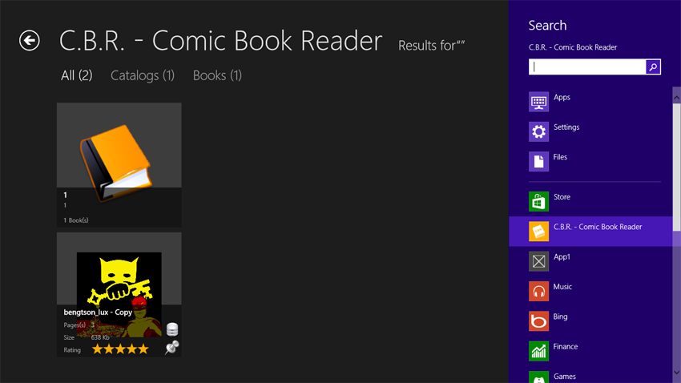

CBR.WinRT (8+)
CBR.WinRT has been created to take advantage of the new Metro UI from Windows 8. It is fully touch compliant
but work also very well on any mouse oriented device. It has been kept simple and efficient.

CBR.WinRT has maximized reading surface, Windows 8 compliant user interface and support screen orientation and snap. Multiple languages : French, English and German

Allow you to create and manage your libraries in a very simple manner. Create, open or delete, fill with book files, or folders or recusively.

Reading is completed with navigation: previous, first, next, last and goto commands. Adjustment : Fit width, Fit Height, None. Offline mode : copy localy for travelling. Bookmarks, with Goto and Clear.
CBR.WinRT support single-volume comics (design choice for performance reasons) and CBR/RAR + CBZ/ZIP formats.

Integrated into Windows shell, you can search the content of the application through the search panel or read skydrive content.